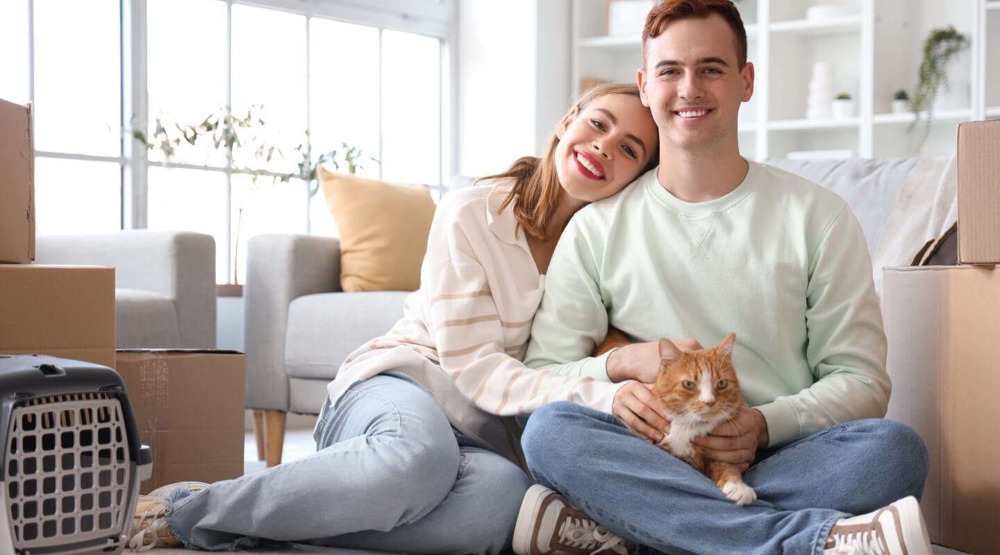
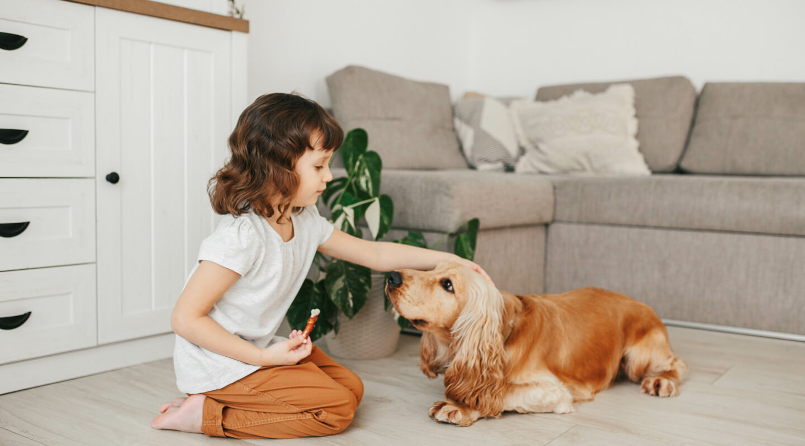
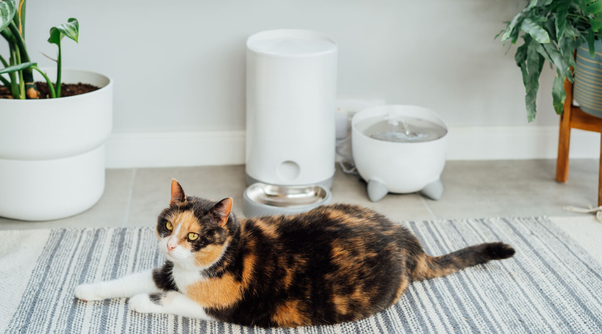

Capturing beautiful photos of your pet at home can be both fun and challenging. Pets are naturally playful and unpredictable, which makes every shot unique. With a few simple techniques, you can turn everyday moments into stunning memories.
From lighting to timing, understanding your pet’s behavior plays a key role in getting the perfect shot. Whether you are using a smartphone or a professional camera, these tips will help you improve your pet photography skills.
The best pet photos are not posed — they are natural, emotional, and full of life. Patience and timing always create the perfect moment.
Lighting is one of the most important elements in photography. Try to shoot near windows where natural light is available. Avoid using harsh flash as it can make pets uncomfortable and create unnatural shadows. Soft lighting enhances your pet’s fur texture and expressions.
Getting down to your pet’s eye level creates a more personal and engaging photo. This perspective helps you connect with your pet and makes the image feel more alive and emotional.



Use toys or treats to grab your pet’s attention and capture natural expressions. Instead of forcing poses, allow your pet to move freely and capture candid moments. These shots often turn out to be the most memorable.
Consistency and patience are key. Take multiple shots and experiment with angles, lighting, and timing. Over time, you’ll understand your pet’s behavior better and be able to capture truly stunning images.
Loved the idea of using natural light. My cat photos look much better now!
Rahul
This article really helped me take better photos of my dog at home. Great tips!